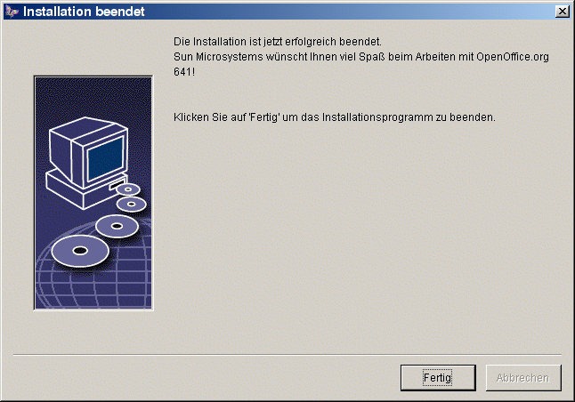

OpenOffice.org-1.0 Installationshandbuch
Inhalt
2 Die Installation von OpenOffice.org
Allgemeine Installationshinweise
Abschluß der Installationsoptionen
Automatisierte Installation unter Unix
Einrichten von Drucker, Fax und Schriften unter Unix
PostScript nach PDF Konverter einrichten
Installation eines Patches unter der Solaris™ Betriebsumgebung
1Verwendete Symbole
In dieser Dokumentation werden Ihnen drei unterschiedliche Symbole begegnen. Diese weisen auf Textabschnitte hin, die entweder wichtige, hilfreiche oder sonstige Zusatzinformationen enthalten. Nachfolgend werden die einzelnen Symbole und ihre Bedeutung beschrieben.
|
|
Achtung! Dieses Symbol weist auf einen Textabschnitt hin, der wichtige Informationen für die Daten- und Systemsicherheit enthält. Beherzigen Sie diese Informationen im eigenen Interesse. |
|
|
Hinweis! Dieses Symbol weist auf einen Textabschnitt hin, der weitergehende Informationen enthält. Diese können sich z. B. auf alternative Wege zur Erreichung eines Ziels beziehen. |
|
|
Tipp! Dieses Symbol hält Tipps für Sie bereit, wie Sie mit dem Programm noch schneller oder effizienter arbeiten können. |
2Die Installation von OpenOffice.org
Installationsarten
In diesem Kapitel geben wir Ihnen allgemeine Informationen über die Installationsarten, die Installationsvoraussetzungen und den Verlauf des Installationsvorgangs. Weitere Hinweise zum Ändern einer bestehenden Installation von OpenOffice.org finden Sie im Anhang unter Ändern der Installation von OpenOffice.org auf Seite 83.
Nachfolgend finden Sie Informationen über die verschiedenen Installationsarten von OpenOffice.org.
-
Installationsart
Zweck
Einzelbenutzer-Installation
OpenOffice.org wird auf einem einzelnen Rechner für einen Anwender installiert (NICHT empfohlen für Unix/Linux)
Mehrbenutzer- oder Netzwerk-Installation
OpenOffice.org wird auf einem Einzelrechner für mehrere Benutzer oder auf einem Netzwerkrechner für die gemeinsame Benutzung installiert.
Die Netzwerkinstallation besteht aus zwei Phasen; in der ersten Phase werden alle gemeinsam verwendeten Komponenten auf einem einzelnen Rechner installiert (typischerweise von root oder dem Systemadministrator), in der zweiten Phase, der Workstation-Installation werden benutzerspezifische Dateien installiert und Einstellungen vorgenommen.
|
|
Die Einzelplatz-Installation ist für alle Anwender geeignet, die OpenOffice.org unter einem Einzelbenutzer-Betriebssystem installierern möchten und sollte normalerweise nicht für Installationen unter Unix/Linux verwendet werden. |
|
|
Für Unixbenutzer steht ein spezielles Installationsskript zur einfachen Durchführung des Installationsvorgangs zur Verfügung. Anwendungsbeispiele:
Weiter Hilfe zum Skript erhalten
Sie durch Eingabe von |
|
|
Im Anhang beschreiben wir, wie das OpenOffice.org Druckeradministrations-Programm spadmin für Unix bedient wird, mit dem Sie Drucker, Fax und Fonts für OpenOffice.org einrichten können. |
Allgemeine Installationshinweise
Systemanforderungen
|
|
Allgemeine Systemanforderungen
|
|
|
Besondere Systemanforderungen für die Solaris™ Betriebsumgebung auf SPARC™ Plattform
Patches für die Solaris Betriebsumgebung finden Sie auf http://sunsolve.sun.com. |
|
|
Besondere Systemanforderungen für die Solaris™ Betriebsumgebung auf Intel-Plattform
Patches für die Solaris Betriebsumgebung finden Sie auf http://sunsolve.sun.com. |
|
|
Besondere Systemanforderungen für Linux (x86 und PPC)
|
|
|
Besondere Systemanforderungen für Windows
|
Vorbereiten der Installation
Entpacken Sie das Installationsarchiv für Ihr Betriebssystem in ein temporäres Verzeichnis Ihrer Wahl. Dabei wird ein Unterverzeichnis Install erzeugt, welches alle Installationsdateien und das Setup-Programm enthält.
Besondere Hinweise zur Installation können Sie in den Dateien readme.txt (Windows) oder README (Solaris und Linux) im Installationsverzeichnis finden. Hier können unter Umständen aktuelle Informationen stehen, die erst nach Drucklegung des Handbuchs bekannt wurden, und die wir Ihnen dringend zu lesen empfehlen.
|
|
Sie können eine laufende Installation jederzeit mit der Schaltfläche Abbrechen beenden. Beachten Sie jedoch, dass OpenOffice.org dann nicht lauffähig sein wird. Sie können nach Abbruch der Installation das Installationsverzeichnis automatisch entfernen lassen. Beachten Sie aber, dass in diesem Fall alle enthaltenen Dateien und Unterordner mit entfernt werden! |
|
|
Hinweis für Windows NT / 2000 und für die Versionen von Win9x, die für Mehrbenutzerbetrieb konfiguriert wurden: In diesen Versionen wird die Datei sversion.ini nicht in das Windows-Verzeichnis geschrieben sondern in das Benutzerdaten-Verzeichnis des jeweiligen Benutzers (z. B. in "C:\Programme und Einstellungen\Benutzername\Anwendungsdaten"). |
|
|
Für Unix steht ein spezielles
Installationsskript namens |
3Einzelplatz-Installation
Mit der Einzelplatz-Installation richten Sie OpenOffice.org auf einem einzelnen Rechner für einen einzelnen Anwender ein.
Bei der Installation von OpenOffice.org als Einzelplatz-Version melden Sie sich als normaler Benutzer am System an und installieren OpenOffice.org unterhalb Ihres Home-Verzeichnisses (Solaris, Linux usw.) oder in einem lokalen Verzeichnis Ihrer Wahl, zu dem Sie die entsprechenden Zugriffsrechte besitzen.
|
|
Diese Installationsart sollte
normalerweise nicht für die Installation unter
Unix/Linux verwendet werden. Da Unix-Systeme nur sehr selten auf
einen einzelnen Benutzer beschränkt sind, empfehlen wir hier
die Verwendung des Installationsskriptes |
Installationsvoraussetzungen
Sie benötigen je nach den von Ihnen gewählten zu installierenden Optionen etwa 190 bis 250 MB freien Platz in dem Verzeichnis, in das Sie OpenOffice.org installieren wollen. Während der Installation wird für temporäre Dateien bis zu 40 MB zusätzlicher Platz benötigt. Die temporären Dateien werden nach erfolgreicher Installation automatisch wieder gelöscht. Ferner benötigen Sie unter Unix ein Swap-Volume von etwa 80 MB Größe.
Installation starten
|
|
Sollten Sie bereits eine ältere OpenOffice.org Version installiert haben, so prüfen Sie bitte zuvor, ob die folgende Datei vorhanden ist:
Die Datei zeigt den Pfad und die Versionsnummer eines bereits installierten OpenOffice.org an. Wenn es sich um ein OpenOffice.org derselben Versionsnummer wie das zu installierende OpenOffice.org handelt, ist eine Installation erst möglich, nachdem Sie das alte OpenOffice.org deinstalliert haben. |
Wenn nötig, melden Sie sich mit Ihrem Benutzernamen am System an. Für eine Einzelplatzinstallation benötigen Sie keine Systemverwalterrechte.
|
|
./setup |
|
|
X:\{tempdir}\install\setup.exe -parameterDabei steht X:\tempdir für das Verzeichnis, in welches das Installationsarchiv entpackt wurde. Für die Einzelplatz-Installation ist es nicht nötig, dem Setup-Programm Parameter zu übergeben. Weitere Hinweise zu Setup-Parametern finden Sie im Anhang. |
Installationsverlauf
Begrüßung
Sie sehen zuerst einen Begrüßungsbildschirm.
In vielen Dialogen des Setup-Programms finden Sie eine Schaltfläche Hilfe, die Ihnen einen kurzen Hilfetext zum aktuellen Dialog anzeigt. Wenn Sie den Hilfetext gelesen haben, kommen Sie mit der Schaltfläche Zurück wieder in das Setup-Programm zurück. Schließen Sie den Hilfetext nicht mit der Systemschaltfläche "x" rechts oben - diese würde das Setup-Programm beenden!
Bestätigen Sie den Begrüßungsbildschirm, indem Sie auf Weiter klicken.
Wichtige Hinweise
Jetzt erscheint ein Fenster mit dem Inhalt der Datei readme.txt (Windows) oder README (Solaris und Linux). Diese Datei können Sie auch nach der Installation aus dem OpenOffice.org Verzeichnis öffnen und lesen.
Lesen Sie den Text und bestätigen Sie mit Weiter.
Lizenzvereinbarung
Sie sehen ein Fenster mit der Lizenzvereinbarung.
Bitte lesen Sie die Lizenzvereinbarung aufmerksam durch. Wenn Sie allen Punkten zustimmen, klicken Sie auf Akzeptieren zum Fortsetzen der Installation. Wenn Sie der Lizenzvereinbarung nicht zustimmen, klicken Sie auf Abbrechen. In diesem Fall wird OpenOffice.org nicht installiert.
Benutzerdaten
Sie sehen den Dialog Benutzerdaten eingeben.
Geben Sie Ihre persönlichen Daten ein.
Die Daten, die Sie hier eingeben, werden z. B. von den Feldbefehlen im OpenOffice.org genutzt, um in Vorlagen zu Briefen oder Faxen bereits Ihren Namen einzutragen.
Sie können diesen Dialog auch später noch mit dem Menübefehl Extras - Optionen - OpenOffice.org als Register Benutzerdaten aufrufen.
Klicken Sie auf Weiter zum Fortsetzen der Installation.
Installationsart
Sie sehen den nächsten Dialog des OpenOffice.org Setup-Programms zur Auswahl der Installationsart.
Der hier angezeigte Speicherplatzbedarf wird aufgrund der Clustergröße auf dem nächsten Ziellaufwerk, auf dem genügend freier Platz vorhanden ist, geschätzt.
Die Standard Installation wird für den normalen Anwender empfohlen. Im Allgemeinen wird sie alle Komponenten mit Auswahl einiger Filter installieren. Wenn Sie diese Option wählen, werden Sie im Anschluss nur noch um die Angabe eines Verzeichnisses gebeten, in das OpenOffice.org installiert werden soll.
Die Benutzergesteuerte Installation zeigt Ihnen ebenfalls zuerst einen Dialog zur Auswahl des Installationsverzeichnisses. Anschließend wird ein Dialog gezeigt, in dem Sie die einzeln installierbaren Komponenten anwählen können.
Die Minimale Installation installiert nur die Komponenten, die mindestens nötig sind, um das OpenOffice.org auszuführen. Bei dieser Option wird die Hilfe nicht installiert, auch auf die meisten Beispiele und Vorlagen müssen Sie verzichten. Wenn Sie diese Option wählen, werden Sie nur noch um die Angabe eines Verzeichnisses gebeten, in das OpenOffice.org installiert werden soll.
Wählen Sie die von Ihnen gewünschte Installationsart.
Klicken Sie auf Weiter zum Fortsetzen der Installation.
Komponentenauswahl
Haben Sie die Benutzergesteuerte Installation gewählt, sehen Sie jetzt einen Dialog zur Auswahl der zu installierenden Komponenten.
Es werden alle Komponenten installiert, deren Kästchen neben den Komponentennamen farbig sind. Wenn Sie eine Komponente nicht installieren wollen, klicken Sie auf das Kästchen neben dem Namen. Das Kästchen wird grau, womit Ihnen anzeigt wird, dass diese Komponente nicht installiert bzw. aus der Installation entfernt wird. Mit jedem Klick auf ein Kästchen wechselt es von farbig nach grau oder umgekehrt, und die zugehörige Komponente mit allen ihren untergeordneten Komponenten wird entweder installiert (farbig) oder nicht installiert (grau).
Wenn Sie auf ein Pluszeichen neben dem Namen einer Komponente klicken, öffnen Sie die Liste der untergeordneten Komponenten. Auch diese können Sie durch Anklicken installieren oder aus der Installation entfernen. Enthält ein Eintrag sowohl Komponenten, die installiert werden, als auch solche, die nicht installiert werden, ist das Kästchen halbtransparent wie z. B. standardmäßig das Kästchen der OpenOffice.org Writer Textfilter, da nur eine Auswahl aus den vielen Filtern vorausgewählt ist.
Wenn Sie die Schaltfläche Standard anklicken, werden ihre Auswahl wieder auf die Voreinstellung zurückgesetzt, die beim ersten Aufruf dieses Dialogs galt.
Einträge in roter Farbe bedeuten, dass diese Komponente immer installiert wird und nicht abgewählt werden kann.
Wählen Sie die von Ihnen gewünschten Module und Komponenten für die Installation aus.
Klicken Sie auf Weiter zum Fortsetzen der Installation.
Installationsverzeichnis
Sie sehen einen Dialog zur Auswahl des Installations-Verzeichnisses.
Im oberen Teil des Dialoges sehen Sie eine Liste der Laufwerke Ihres Systems mit Angaben zu benötigtem und freiem Speicherplatz. Der benötigte Speicherplatz kann sich auf Grund unterschiedlicher Clustergrößen auf unterschiedlichen Laufwerken unterscheiden.
Wählen Sie den Installationspfad auf Wunsch aus einem Auswahldialog, indem Sie auf Durchsuchen klicken, oder geben Sie den Pfad direkt in das Textfeld ein. Wenn das genannte Verzeichnis nicht existiert, wird es nach Rückfrage automatisch angelegt. OpenOffice.org wird in das genannte Verzeichnis Dateien und weitere Unterordner mit Dateien installieren.
Klicken Sie auf Weiter zum Fortsetzen der Installation.
Abschluß der Installationsoptionen
Ein Dialog informiert Sie, dass alle notwendigen Angaben zum Kopieren der Programmdateien gemacht wurden.
Klicken Sie auf Installieren zum Fortsetzen der Installation.
Zuordnung der Dateitypen
Im folgenden Dialog wählen Sie aus, welche zusätzlichen Dateitypen mit OpenOffice.org geöffnet werden sollen. OpenOffice.org wird beim Betriebssystem für die entsprechenden Dateitypen als voreingestelltes Programm registriert.
Wählen Sie die Dateitypen aus, die OpenOffice.org zusätzlich zu den eigenen Dateitypen öffnen soll.
Wenn Sie OpenOffice.org als Standardeditor für HTML-Dateien (Webseiten) verwenden wollen, markieren Sie das Feld unter Standard HTML Editor. Diese Einstellung bezieht sich nur auf das Editieren von HTML-Dateien. Geöffnet werden diese Dateien nach wie vor mit Ihrem Browser (z. B. Netscape).
Klicken Sie auf OK
Java™-Laufzeitumgebung
Sie sehen einen Dialog, der die in Ihrem System angemeldeten Versionen der Java-Laufzeitumgebung aufführt.
Wählen Sie hier, welche Java Laufzeitumgebung Sie mit OpenOffice.org verwenden wollen. Sie benötigen die Dateien der Version 1.3.1 oder höher. Wenn Sie bereits eine neuere Version als 1.3.1 installiert haben, brauchen Sie die mitgelieferte Version nicht zu installieren, sofern OpenOffice.org die installierte Version als verifiziert ausweist.
Wählen Sie die gewünschte Option und klicken Sie auf OK.
Start des Kopiervorgangs
Nach Beginn des Kopiervorgangs sehen Sie den Fortschritt der Installation und eine Schätzung der verbleibenden Installationszeit.
Abschluß der Installation
Nach Beendigung des Kopier- und Registriervorgangs sehen Sie den Abschlussdialog.
-

Klicken Sie auf Fertig zum Beenden der Installation.
OpenOffice.org starten
|
|
Zum Starten von OpenOffice.org unter Unix wechseln Sie in das Verzeichnis OpenOffice.org1.0/program oder in das lokale OpenOffice.org-Verzeichnis in Ihrem Home-Verzeichnis und starten Sie von dort OpenOffice.org mit dem Befehl ./soffice Sie können das OpenOffice.org1.0/program Verzeichnis auch in den Pfad für Programme unter Unix aufnehmen. Dann können Sie OpenOffice.org mit dem Befehl "soffice" von jedem beliebigen Verzeichnis aus starten. Zum Einrichten des Standarddruckers rufen Sie bitte das Druckeradministrations-Programm spadmin auf, das im Anhang beschrieben wird. Zur Aktualisierung der CDE-Integration sollten Sie sich nach der Installation unter der Solaris Betriebsumgebung einmal aus- und wieder einloggen. |
|
|
Nach Abschluß der Installation finden Sie unter Windows im Startmenü unter Programme / OpenOffice.org 1.0 Menüeinträge zum Starten der verschiedenen installierten OpenOffice.org-Komponenten. Bei der Installation von OpenOffice.org wird im Autostart-Ordner des Windows-Startmenüs eine Verknüpfung zum OpenOffice.org-Schnellstarter erzeugt. Nach einem Systemneustart steht Ihnen dieser Schnellstarter im System Tray zur Verfügung. Mit einem rechten Mausklick auf das Schnellstarter-Symbol aktivieren Sie ein Kontextmenü, aus welchem Sie die verschiedenen OpenOffice.org-Komponenten starten können. Nähere Informationen zur Funktionalität des Schnellstarters finden Sie in der Hilfe unter dem Stichwort "Schnellstart". |
4Netzwerkinstallation
Installation Phase 1
Die Mehrbenutzer- oder Netzwerk-Installation von OpenOffice.org erfolgt in zwei Schritten. Zuerst melden Sie sich als Systemverwalter oder als normaler Benutzer mit entsprechenden Rechten am System an und installieren das komplette OpenOffice.org unter Verwendung des Parameters -net in ein Verzeichnis auf einem Netzwerkserver, in dem die Benutzer Lese- und Execute-Rechte haben. Ist diese Phase der Installation erfolgreich beendet, kann sich jeder Benutzer am System anmelden und OpenOffice.org in einen Ordner in seinem Home-Verzeichnis mit Hilfe der Workstation-Installation installieren.
Rufen Sie zur Durchführung der Phase 1 das Setup-Programm aus dem Installationsverzeichnis der CD auf und übergeben Sie beim Aufruf den Parameter -net.
|
|
Diese Phase der Installation installiert keine direkt ausführbare OpenOffice.org-Version. Auch als Systemverwalter müssen Sie bei Bedarf eine Workstation-Installation ausführen. |
Installationsvoraussetzungen
Sie benötigen etwa 250 MB freien Platz in dem Verzeichnis auf dem Server, in das Sie OpenOffice.org installieren wollen. Während der Installation wird für temporäre Dateien bis zu etwa 20 MB zusätzlicher Platz benötigt. Die temporären Dateien werden nach erfolgreicher Installation automatisch wieder gelöscht. Unter Unix benötigen Sie ein Swap-Volume mit etwa 80 MB Größe.
Installation starten
Melden Sie sich als Systemverwalter am System an.
|
|
|
|
|
X:\{tempdir}\install\setup.exe -netDabei steht X:\tempdir für das Verzeichnis, in welches das Installationsarchiv entpackt wurde. |
Installationsverlauf
Begrüßung
Sie sehen zuerst einen Begrüßungsbildschirm.
In vielen Dialogen des Setup-Programms finden Sie eine Schaltfläche Hilfe, die Ihnen einen kurzen Hilfetext zum aktuellen Dialog anzeigt. Wenn Sie den Hilfetext gelesen haben, kommen Sie mit der Schaltfläche Zurück wieder in das Setup-Programm zurück. Schließen Sie den Hilfetext nicht mit der Systemschaltfläche "x" rechts oben - diese würde das Setup-Programm beenden!
Bestätigen Sie den Begrüßungsbildschirm, indem Sie auf Weiter klicken.
Wichtige Hinweise
Jetzt erscheint ein Fenster mit dem Inhalt der Datei readme.txt (Windows) oder README (Solaris und Linux). Diese Datei können Sie auch nach der Installation aus dem OpenOffice.org Verzeichnis öffnen und lesen.
Lesen Sie den Text und bestätigen Sie mit Weiter.
Lizenzvereinbarung
Sie sehen ein Fenster mit der Lizenzvereinbarung.
Bitte lesen Sie die Lizenzvereinbarung aufmerksam durch. Wenn Sie allen Punkten zustimmen, klicken Sie auf Akzeptieren zum Fortsetzen der Installation. Wenn Sie der Lizenzvereinbarung nicht zustimmen, klicken Sie auf Abbrechen. In diesem Fall wird OpenOffice.org nicht installiert.
Installationsart
Sie sehen den nächsten Dialog des OpenOffice.org Setup-Programms zur Auswahl der Installationsart.
Der hier angezeigte Speicherplatzbedarf wird aufgrund der Clustergröße auf dem nächsten Ziellaufwerk, auf dem genügend freier Platz vorhanden ist, geschätzt.
Bei der Installation auf dem Netzwerk Server sollten Sie alle Komponenten von OpenOffice.org installieren. Wählen Sie die Benutzergesteuerte Installation und markieren Sie alle Optionen im übernächsten Dialog, nachdem Sie im nächsten Dialog ein Verzeichnis gewählt haben.
Wählen Sie Benutzergesteuerte Installation.
Klicken Sie auf Weiter zum Fortsetzen der Installation.
Installationsverzeichnis
Sie sehen einen Dialog zur Auswahl des Installations-Verzeichnisses.
Im oberen Teil des Dialoges sehen Sie eine Liste der Laufwerke Ihres Systems mit Angaben zu benötigtem und freiem Speicherplatz. Der benötigte Speicherplatz kann sich auf Grund unterschiedlicher Clustergrößen auf unterschiedlichen Laufwerken unterscheiden.
Wählen Sie den Installationspfad auf Wunsch aus einem Auswahldialog, indem Sie auf Durchsuchen klicken, oder geben Sie den Pfad direkt in das Textfeld ein. Wenn das genannte Verzeichnis nicht existiert, wird es nach Rückfrage automatisch angelegt. OpenOffice.org wird in das genannte Verzeichnis Dateien und weitere Unterordner mit Dateien installieren.
Klicken Sie auf Weiter zum Fortsetzen der Installation.
|
|
Wählen Sie ein Verzeichnis, in dem alle Benutzer Rechte zum Lesen und Ausführen haben, damit die Workstation-Installationen ausgeführt werden können. |
Komponentenauswahl
Haben Sie die Benutzergesteuerte Installation gewählt, sehen Sie jetzt einen Dialog zur Auswahl der zu installierenden Komponenten.
Es werden alle Komponenten installiert, deren Kästchen neben den Komponentennamen farbig sind. Wenn Sie eine Komponente nicht installieren wollen, klicken Sie auf das Kästchen neben dem Namen. Das Kästchen wird grau, womit Ihnen anzeigt wird, dass diese Komponente nicht installiert bzw. aus der Installation entfernt wird. Mit jedem Klick auf ein Kästchen wechselt es von farbig nach grau oder umgekehrt, und die zugehörige Komponente mit allen ihren untergeordneten Komponenten wird entweder installiert (farbig) oder nicht installiert (grau).
Wenn Sie auf ein Pluszeichen neben dem Namen einer Komponente klicken, öffnen Sie die Liste der untergeordneten Komponenten. Auch diese können Sie durch Anklicken installieren oder aus der Installation entfernen. Enthält ein Eintrag sowohl Komponenten, die installiert werden, als auch solche, die nicht installiert werden, ist das Kästchen halbtransparent wie z. B. standardmäßig das Kästchen der OpenOffice.org Writer Textfilter, da nur eine Auswahl aus den vielen Filtern vorausgewählt ist.
Wenn Sie die Schaltfläche Standard anklicken, werden ihre Auswahl wieder auf die Voreinstellung zurückgesetzt, die beim ersten Aufruf dieses Dialogs galt.
Einträge in roter Farbe bedeuten, dass diese Komponente immer installiert wird und nicht abgewählt werden kann.
Wählen Sie die von Ihnen gewünschten Module und Komponenten für die Installation aus.
Klicken Sie auf Weiter zum Fortsetzen der Installation.
Abschluß der Installationsoptionen
Ein Dialog informiert Sie, dass alle notwendigen Angaben zum Kopieren der Programmdateien gemacht wurden.
Klicken Sie auf Installieren zum Fortsetzen der Installation.
Start des Kopiervorgangs
Nach Beginn des Kopiervorgangs sehen Sie den Fortschritt der Installation und eine Schätzung der verbleibenden Installationszeit.
Abschluß der Installation
Nach Beendigung des Kopier- und Registriervorgangs sehen Sie den Abschlussdialog.
Klicken Sie auf Fertig zum Beenden der Installation.
Als nächstes kann jeder Benutzer mit Hilfe der Workstation-Installation OpenOffice.org in sein Home-Verzeichnis bzw. auf seine lokale Festplatte installieren.
|
|
Sie können als Systemverwalter auf dem Server das Druckeradministrations-Programm spadmin aufrufen, um u. a. Druckereinstellungen für die einzelnen Benutzer-Installationen vorzugeben und Fonts zu installieren. Näheres zu spadmin finden Sie im Anhang. |
Workstation-Installation
Jeder Benutzer im Netzwerk kann unter seinem Namen eine Workstation-Installation durchführen, indem er das Setup-Programm aus der Server-Installation aufruft.
Installationsvoraussetzungen
Sie benötigen etwa 2 bis 4 MB freien Speicherplatz für die Installation.
Installation starten
Voraussetzung für die Durchführung einer Workstation-Installation ist eine korrekt durchgeführte Server-Installation, wie unter Server-Installation auf Seite beschrieben.
|
|
Sollten Sie bereits eine ältere OpenOffice.org Version installiert haben, so prüfen Sie bitte zuvor, ob die folgende Datei vorhanden ist:
Die Datei zeigt den Pfad und die Versionsnummer eines bereits installierten OpenOffice.org an. Wenn es sich um ein OpenOffice.org derselben Versionsnummer wie das zu installierende OpenOffice.org handelt, ist eine Installation erst möglich, nachdem Sie das alte OpenOffice.org deinstalliert haben. |
Melden Sie sich unter Ihrem Benutzernamen am System an.
|
|
|
|
|
|
Installationsverlauf
Begrüßung
Sie sehen zuerst einen Begrüßungsbildschirm.
In vielen Dialogen des Setup-Programms finden Sie eine Schaltfläche Hilfe, die Ihnen einen kurzen Hilfetext zum aktuellen Dialog anzeigt. Wenn Sie den Hilfetext gelesen haben, kommen Sie mit der Schaltfläche Zurück wieder in das Setup-Programm zurück. Schließen Sie den Hilfetext nicht mit der Systemschaltfläche "x" rechts oben - diese würde das Setup-Programm beenden!
Bestätigen Sie den Begrüßungsbildschirm, indem Sie auf Weiter klicken.
Wichtige Hinweise
Jetzt erscheint ein Fenster mit dem Inhalt der Datei readme.txt (Windows) oder README (Solaris und Linux). Diese Datei können Sie auch nach der Installation aus dem OpenOffice.org Verzeichnis öffnen und lesen.
Lesen Sie den Text und bestätigen Sie mit Weiter.
Lizenzvereinbarung
Sie sehen ein Fenster mit der Lizenzvereinbarung.
Bitte lesen Sie die Lizenzvereinbarung aufmerksam durch. Wenn Sie allen Punkten zustimmen, klicken Sie auf Akzeptieren zum Fortsetzen der Installation. Wenn Sie der Lizenzvereinbarung nicht zustimmen, klicken Sie auf Abbrechen. In diesem Fall wird OpenOffice.org nicht installiert.
Benutzerdaten
Sie sehen den Dialog Benutzerdaten eingeben.
Geben Sie Ihre persönlichen Daten ein.
Die Daten, die Sie hier eingeben, werden z. B. von den Feldbefehlen im OpenOffice.org genutzt, um in Vorlagen zu Briefen oder Faxen bereits Ihren Namen einzutragen.
Sie können diesen Dialog auch später noch mit dem Menübefehl Extras - Optionen - OpenOffice.org als Register Benutzerdaten aufrufen.
Klicken Sie auf Weiter zum Fortsetzen der Installation.
Installationsart
Wählen Sie für die Benutzer-Installation die Option Workstation Installation. Dabei werden nur die Dateien installiert, die variable Daten für einen Benutzer enthalten.
Die Installation lokal installiert ein komplettes OpenOffice.org lokal, als Quelle dient die Server-Installation.
Klicken Sie auf Weiter zum Fortsetzen der Installation.
Installationsverzeichnis
Sie sehen einen Dialog zur Auswahl des Installations-Verzeichnisses.
Im oberen Teil des Dialoges sehen Sie eine Liste der Laufwerke Ihres Systems mit Angaben zu benötigtem und freiem Speicherplatz. Der benötigte Speicherplatz kann sich auf Grund unterschiedlicher Clustergrößen auf unterschiedlichen Laufwerken unterscheiden.
Wählen Sie den Installationspfad auf Wunsch aus einem Auswahldialog, indem Sie auf Durchsuchen klicken, oder geben Sie den Pfad direkt in das Textfeld ein. Wenn das genannte Verzeichnis nicht existiert, wird es nach Rückfrage automatisch angelegt. OpenOffice.org wird in das genannte Verzeichnis Dateien und weitere Unterordner mit Dateien installieren.
Klicken Sie auf Weiter zum Fortsetzen der Installation.
Abschluß der Installationsoptionen
Ein Dialog informiert Sie, dass alle notwendigen Angaben zum Kopieren der Programmdateien gemacht wurden.
Klicken Sie auf Installieren zum Fortsetzen der Installation.
Zuordnung der Dateitypen
Im folgenden Dialog wählen Sie aus, welche zusätzlichen Dateitypen mit OpenOffice.org geöffnet werden sollen. OpenOffice.org wird beim Betriebssystem für die entsprechenden Dateitypen als voreingestelltes Programm registriert.
Wählen Sie die Dateitypen aus, die OpenOffice.org zusätzlich zu den eigenen Dateitypen öffnen soll.
Wenn Sie OpenOffice.org als Standardeditor für HTML-Dateien (Webseiten) verwenden wollen, markieren Sie das Feld unter Standard HTML Editor. Diese Einstellung bezieht sich nur auf das Editieren von HTML-Dateien. Geöffnet werden diese Dateien nach wie vor mit Ihrem Browser (z. B. Netscape).
Klicken Sie auf OK
Java™-Laufzeitumgebung
Sie sehen einen Dialog, der die in Ihrem System angemeldeten Versionen der Java-Laufzeitumgebung aufführt.
Wählen Sie hier, welche Java Laufzeitumgebung Sie mit OpenOffice.org verwenden wollen. Sie benötigen die Dateien der Version 1.3.1 oder höher. Wenn Sie bereits eine neuere Version als 1.3.1 installiert haben, brauchen Sie die mitgelieferte Version nicht zu installieren, sofern OpenOffice.org die installierte Version als verifiziert ausweist.
Wählen Sie die gewünschte Option und klicken Sie auf OK.
Start des Kopiervorgangs
Nach Beginn des Kopiervorgangs sehen Sie den Fortschritt der Installation und eine Schätzung der verbleibenden Installationszeit.
Abschluß der Installation
Nach Beendigung des Kopier- und Registriervorgangs sehen Sie den Abschlussdialog.
Klicken Sie auf Fertig zum Beenden der Installation.
OpenOffice.org starten
|
|
Zum Starten von OpenOffice.org unter Unix wechseln Sie in das Verzeichnis OpenOffice.org1.0/program oder in das lokale OpenOffice.org-Verzeichnis in Ihrem Home-Verzeichnis und starten Sie von dort OpenOffice.org mit dem Befehl ./soffice Sie können das OpenOffice.org1.0/program Verzeichnis auch in den Pfad für Programme unter Unix aufnehmen. Dann können Sie OpenOffice.org mit dem Befehl "soffice" von jedem beliebigen Verzeichnis aus starten. Zum Einrichten des Standarddruckers rufen Sie bitte das Druckeradministrations-Programm spadmin auf, das im Anhang beschrieben wird. Zur Aktualisierung der CDE-Integration sollten Sie sich nach der Installation unter der Solaris Betriebsumgebung einmal aus- und wieder einloggen. |
|
|
Nach Abschluß der Installation finden Sie unter Windows im Startmenü unter Programme / OpenOffice.org 1.0 Menüeinträge zum Starten der verschiedenen installierten OpenOffice.org-Komponenten. Bei der Installation von OpenOffice.org wird im Autostart-Ordner des Windows-Startmenüs eine Verknüpfung zum OpenOffice.org-Schnellstarter erzeugt. Nach einem Systemneustart steht Ihnen dieser Schnellstarter im System Tray zur Verfügung. Mit einem rechten Mausklick auf das Schnellstarter-Symbol aktivieren Sie ein Kontextmenü, aus welchem Sie die verschiedenen OpenOffice.org-Komponenten starten können. Nähere Informationen zur Funktionalität des Schnellstarters finden Sie in der Hilfe unter dem Stichwort "Schnellstart". |
5Anhang
Im Anhang finden Sie Beschreibungen zur automatisierten Installation von OpenOffice.org, zum Druckeradministrations-Programm unter der Solaris-Betriebsumgebung und unter Linux, Informationen zum Ändern und Reparieren der Installation sowie zum Deinstallieren von OpenOffice.org.
Automatisierte Installation unter Unix
Für die automatisierte Installation von OpenOffice.org unter Unix steht Ihnen ein spezielles Installationsskript zur Verfügung, mit dessen Hilfe OpenOffice.org auf der Kommandozeile mit oder ohne grafische Oberfläche installiert werden kann.
Das Installationsskript install
führt standardmäßig eine Netzwerkinstallation
(Serverinstallation) von OpenOffice.org (entsprechend der Option
setup -net) durch und akzeptiert folgende
Kommandozeilenparameter:
|
--help |
gibt eine kurze Hilfemeldung aus |
|
--version |
gibt die Versionsnummer des zu
installierenden |
|
--prefix=PREFIX |
installiert OpenOffice.org nach
PREFIX
|
|
--single |
führt eine Einzelplatz-Installation von OpenOffice.org durch (Standard ist eine Netzwerkinstallation) |
|
--interactive |
installiert OpenOffice.org im interaktiven Modus |
Beispiel
./install
--prefix=/opt
startet eine Mehrbenutzer- oder
Netzwerkinstallation (Phase 1) von OpenOffice.org in das Verzeichnis
/opt
|
|
Nach diesem Installationsschritt muss für jeden Benutzer eine Workstation-Installation durchgeführt werden, um ein benutzbares OpenOffice.org zu erhalten. Die Workstation-Installation wird automatisch gestartet, wenn ein Benutzer zum ersten Mal OpenOffice.org zu starten versucht. |
Einrichten von Drucker, Fax und Schriften unter Unix
Unter Unix wird das Druckeradministrations-Programm spadmin mitgeliefert, das Ihnen hilft, Drucker, Fax und Schriften für den Betrieb mit OpenOffice.org einzurichten.
Das Druckeradministrations-Programm spadmin rufen Sie folgendermaßen auf:
Wechseln Sie in das Verzeichnis OpenOffice.org1.0/program
Geben Sie ein:
./spadmin
Nach dem Start sehen Sie das Fenster des Druckeradministrations-Programm spadmin, in dem Sie alle wichtigen Einstellungen vornehmen können.
Bei einer Netzwerkinstallation meldet sich zunächst der Systemadministrator als Benutzer root im System an und ruft das Druckeradministrations-Programm spadmin auf. Er erstellt damit eine allgemeine Druckerkonfigurationsdatei OpenOffice.org1.0/share/psprint/psprint.conf für alle Benutzer. Alle Änderungen sind sofort für alle Benutzer in OpenOffice.org verfügbar.
Der Systemadministrator kann auch Schriften für alle Benutzer in der Netzwerkinstallation hinzufügen; diese sind aber erst nach einem Neustart von OpenOffice.org verfügbar.
Drucker einrichten
OpenOffice.org bietet unter Unix nur für PostScript-Drucker eine direkte Unterstützung an. Andere Drucker müssen wie im Abschnitt Druckertreiber in OpenOffice.org beschrieben eingerichtet werden. OpenOffice.org stellt Ihnen für jede Systemqueue automatisch einen Drucker mit dem Standardtreiber zur Verfügung. Falls Sie erweiterte Eigenschaften Ihres Druckers nutzen wollen, können Sie zusätzliche Drucker hinzufügen.
Drucker hinzufügen
Betätigen Sie die Schaltfläche Neuer Drucker.
Wählen Sie die Option einen Drucker anlegen und betätigen Sie die Schaltfläche Weiter.
Wählen Sie einen passenden Treiber für Ihren Drucker aus. Falls Sie keinen PostScript Drucker verwenden oder Ihr Modell nicht aufgeführt ist, verwenden Sie den Treiber "Generic Printer" oder verfahren Sie wie unten aufgeführt. Sie können hier auch neue Treiber mit der Schaltfläche Importieren hinzufügen oder nicht mehr benötigte Treiber mit der Schaltfläche Löschen löschen (näheres siehe unten). Danach betätigen Sie die Schaltfläche Weiter.
Wählen Sie eine Kommandozeile aus, mit der auf Ihrem Drucker gedruckt werden kann (z. B. lp -d my_queue). Betätigen Sie die Schaltfläche Weiter.
Geben Sie dem Drucker einen Namen und bestimmen Sie, ob er zum Standarddrucker werden soll. Betätigen Sie die Schaltfläche Fertig stellen.
Zum Drucken einer Testseite klicken Sie auf Testseite. Wenn die Testseite nicht oder nicht korrekt gedruckt wird, überprüfen Sie alle Einstellungen wie unter Druckereinstellungen ändern beschrieben.
Ab jetzt steht Ihr neuer Drucker in OpenOffice.org zur Verfügung.
Druckertreiber in OpenOffice.org
Bei der Installation eines nicht PostScript fähigen Druckers müssen Sie Ihr System so einrichten, dass PostScript in die Sprache des Druckers konvertiert werden kann. Wir empfehlen die Verwendung gängiger PostScript-Konvertierungs-Software, wie z. B. Ghostscript (http://www.cs.wisc.edu/~ghost/).
Sie sollten in diesem Fall den "Generic Printer" einrichten. Achten Sie bitte auch auf die korrekten Einstellungen der Seitenränder. Die Informationen finden Sie in den folgenden Abschnitten.
Wenn Sie im Besitz eines PostScript fähigen Druckers sind, sollten Sie immer eine zum Drucker passende Beschreibungsdatei (PostScript Printer Definition - PPD) installieren, damit Sie die Papierschachtauswahl, gegebenenfalls den vorhandenen Duplexdruck und alle eingebauten Schriften verwenden können. Sie können auch den generischen Druckertreiber verwenden, da er die wichtigsten Daten enthält und für die meisten Drucker geeignet ist. In diesem Fall müssen Sie auf die Auswahl von Papierschächten verzichten und die Seitenränder korrekt einstellen.
Einige PPD-Dateien sind standardmäßig installiert. Falls für Ihren Drucker keine passende PPD-Datei installiert ist, finden Sie unter http://www.adobe.com/products/printerdrivers/ verschiedene PPD Dateien. Auch beim Hersteller Ihres Druckers können Sie nach PPD Dateien fragen. Den geeigneten Treiber entpacken Sie und binden ihn mit spadmin in Ihr System ein. Gehen Sie dazu wie im Folgenden beschrieben vor.
Treiber können Sie während des Anlegens eines neuen Druckers importieren oder Löschen.
Zum Import von neuen Treibern klicken Sie im Treiberauswahldialog auf Importieren. Über Durchsuchen können Sie das Verzeichnis auswählen, in dem Sie die PPD-Dateien entpackt haben. Im Listenfeld Treiberauswahl wählen Sie dann die Druckertreiber aus, die Sie installieren wollen und klicken danach auf OK.
Zum Löschen eines Druckertreibers wählen Sie den Druckertreiber aus und klicken Sie auf die Schaltfläche Löschen. Achten Sie bitte darauf, den generischen Druckertreiber nicht zu löschen, und bedenken Sie, dass gelöschte Treiber aus Netzwerkinstallationen auch nicht mehr anderen Benutzern zur Verfügung stehen, die die gleiche Netzwerkinstallation benutzen.
Falls der Drucker mehr Schriften eingebaut hat als die üblichen Standard PostScript Schriften, müssen Sie auch die AFM Dateien zu diesen zusätzlichen Schriften laden. Kopieren Sie die AFM Dateien in das Verzeichnis OpenOffice.org1.0/share/psprint/fontmetric der OpenOffice.org Installation oder in das Verzeichnis OpenOffice.org1.0/user/psprint/fontmetric der User-Installation. AFM Dateien finden Sie z. B. unter ftp://ftp.adobe.com/pub/adobe/type/win/all/afmfiles/.
Druckereinstellungen ändern
Wählen Sie im Druckeradministrations-Programm spadmin den Drucker im Listenfeld Installierte Drucker und klicken Sie auf Eigenschaften. Sie sehen den Dialog Eigenschaften mit mehreren Registern. Hier können Sie die Einstellungen vornehmen, die entsprechend der PPD Datei des gewählten Druckern verfügbar sind.
Im Register Kommando wählen Sie das Kommando. Sie können überflüssige Kommandos mit der Schaltfläche Entfernen aus der Liste entfernen.
Im Register Papier können Sie u. a. das Papierformat und den Papierschacht vorgeben, der bei diesem Drucker standardmäßig verwendet wird.
Im Register Gerät aktivieren Sie spezielle Optionen Ihres Druckers. Wenn Ihr Drucker nur schwarzweiß drucken kann, sollte unter Farbe "Graustufen" eingestellt werden, ansonsten "Farbe". Falls die Umsetzung auf Graustufen zu schlechten Ergebnissen führt, können Sie auch unter Farbe "Farbe" wählen und die Umsetzung dem Drucker oder dem PostScript-Emulator überlassen. Ferner können Sie in diesem Register die Genauigkeit, mit der Farben beschrieben werden sowie den PostScript Level einstellen.
Das Register Schriftersetzung ermöglicht Ihnen, für jede auf Ihrem Computer installierte Schriftart eine im Drucker vorhandene Druckerschriftart zu wählen. Damit haben Sie die Möglichkeit, die zum Drucker zu übertragenden Datenmengen deutlich geringer zu halten. Die Schriftersetzung kann für jeden Drucker einzeln ein- oder ausgeschaltet werden.
Außerdem sollten Sie bei Verwendung des generischen Druckertreibers im Register Weitere Einstellungen die Seitenränder (den nicht bedruckbaren Rand) richtig einstellen, damit Ihr Ausdruck später nicht abgeschnitten wird. Zusätzlich können Sie im Feld Kommentar eine Beschreibung eingeben, die auch im Dialog Drucken angezeigt wird.
Einige dieser Einstellungen können auch im Dialog Drucken oder im Dialog Druckereinstellungen in OpenOffice.org über die Schaltfläche Eigenschaften pro Dokument/Ausdruck eingestellt werden.
Drucker umbenennen oder löschen
Wählen Sie im Listenfeld Installierte Drucker einen Drucker aus.
Um den ausgewählten Drucker umzubenennen, klicken Sie auf die Schaltfläche Umbenennen. Geben Sie im dann erscheinenden Dialog einen passenden Namen ein und klicken Sie auf OK. Der Name muss eindeutig sein und sollte so gewählt werden, dass man Drucker und Anwendungsfall erkennen kann. Die Druckernamen sollten so vergeben werden, dass sie bei allen Benutzern gleich sind, da bei Austausch der Dokumente auch der ausgewählte Drucker erhalten bleibt, wenn dieser unter dem gleichen Namen auch beim Empfänger vorhanden ist.
Um den ausgewählten Drucker zu löschen, klicken Sie auf Entfernen. Der Standarddrucker oder ein Drucker, der vom Systemadministrator in einer Netzwerkinstallation angelegt wurde, kann mit diesem Dialog nicht entfernt werden.
Wahl des Standarddruckers
Um den im Listenfeld Installierte Drucker ausgewählten Drucker zum Standarddrucker zu erklären, klicken Sie doppelt auf seinen Namen oder klicken Sie auf die Schaltfläche Standard.
Fax einrichten
Wenn auf Ihrem Computer ein funktionierendes Faxpaket wie z. B. Efax oder HylaFax installiert ist, können Sie mit OpenOffice.org auch einfach und komfortabel Faxe verschicken.
Klicken Sie auf Neuer Drucker. Sie sehen den Dialog Drucker hinzufügen.
Wählen Sie eine Faxlösung anbinden. Klicken Sie auf Weiter.
Wählen Sie, ob Sie den Standardtreiber oder einen anderen Druckertreiber verwenden wollen. Klicken Sie auf Weiter. Falls Sie nicht den Standardtreiber verwenden, wählen Sie den passenden Treiber aus und klicken Sie auf Weiter.
Im folgenden Dialog geben Sie eine Kommandozeile ein, mit der Sie das Fax ansprechen wollen. Bei jedem gesendeten Fax wird in der Kommandozeile jeweils "(TMP)" durch eine temporäre Datei und "(PHONE)" durch die Telefonnummer des Empfängerfaxgerätes ersetzt. Wenn "(TMP)" in der Kommandozeile vorkommt, wird der Postscript-Code in einer Datei übergeben, andernfalls über die Standardeingabe (d. h. als Pipe). Klicken Sie anschließend auf Weiter.
Geben Sie Ihrem neuen Faxdrucker einen Namen und bestimmen Sie, ob die im Text speziell markierten Telefonnummern (siehe unten) aus dem Ausdruck entfernt werden sollen oder nicht. Klicken Sie auf Fertig stellen.
Ab jetzt können Sie einfach Faxe versenden, indem Sie auf den gerade angelegten Drucker drucken.
Im Dokument geben Sie die Faxnummer als Text ein. Sie können auch einen Feldbefehl eingeben, der die Faxnummer aus der aktuellen Datenbank übernimmt. Die Faxnummer muss in jedem Fall durch die Zeichen @@# eingeleitet und durch die Zeichen @@ abgeschlossen werden. Eine gültige Angabe hätte die Form @@#040123456@@.
Sollen diese Zeichen einschließlich der Telefonnummer nicht gedruckt werden, so aktivieren Sie unter Eigenschaften im Register Kommando die Option Faxnummer wird aus der Ausgabe entfernt. Wird im Dokument keine Telefonnummer angegeben, wird sie nach dem Ausdruck in einem Dialog abgefragt.
Sie können in OpenOffice.org auch eine Schaltfläche zum Senden an ein Starndardfax aktivieren. Klicken Sie hierzu mit der rechten Maustaste auf die Funktionsleiste, öffnen Sie im aufklappenden Menü das Untermenü Sichtbare Schaltflächen und aktivieren dort die Schaltfläche Standard-Fax senden. Welches Fax beim Betätigen dieser Schaltfläche verwendet wird, konfigurieren Sie unter Extras - Optionen - Textdokument - Drucken.
Achten Sie darauf, dass Sie für jedes Fax einen eigenen Druckjob erzeugen, da sonst der erste Empfänger alle Faxe erhalten würde. Im Dialog Datei - Serienbrief wählen Sie die Option Drucker und dann das Feld Einzelne Druckjobs erzeugen.
PostScript nach PDF Konverter einrichten
Wenn auf Ihrem Computer ein funktionierender PostScript nach PDF Konverter wie z. B. Ghostscript oder der Adobe Acrobat Distiller™ installiert ist, können Sie mit OpenOffice.org auch einfach und komfortabel PDF Dokumente erzeugen.
Klicken Sie auf Neuer Drucker. Sie sehen den Dialog Drucker hinzufügen.
Wählen Sie einen PDF Konverter anbinden. Klicken Sie auf Weiter.
Wählen Sie, ob Sie den Standardtreiber, den "Acrobat Distiller" Treiber oder einen anderen Treiber verwenden wollen. Klicken Sie auf Weiter. Falls Sie nicht den Standardtreiber oder den "Acrobat Distiller" Treiber verwenden, wählen Sie den passenden Treiber aus und klicken Sie auf Weiter.
Im folgenden Dialog geben Sie eine Kommandozeile ein, mit der Sie den PostScript->PDF Konverter ansprechen wollen. Außerdem geben Sie hier das Verzeichnis an, in dem die erzeugten PDF Dateien abgelegt werden sollen. Wenn Sie dieses Verzeichnis nicht angeben, wird das Home-Verzeichnis des Benutzers verwendet. Bei jedem erzeugten PDF Dokument wird in der Kommandozeile jeweils "(TMP)" durch eine temporäre Datei und "(OUTFILE)" durch die Zieldatei, deren Name aus dem Dokumentnamen erzeugt wird, ersetzt. Wenn "(TMP)" in der Kommandozeile vorkommt, wird der PostScript-Code in einer Datei übergeben, andernfalls über die Standardeingabe (d. h. als Pipe). Falls sich Ghostscript oder der Adobe Acrobat Distiller im Suchpfad befinden, können Sie eine der vorgegebenen Kommandozeilen verwenden. Klicken Sie auf Weiter.
Geben Sie Ihrem neuen PDF Konverter einen Namen. Klicken Sie auf Fertig stellen.
Ab jetzt können Sie PDF Dokumente erzeugen, indem Sie auf den gerade angelegten Konverter drucken.
Schriften einrichten
Wenn Sie mit dem OpenOffice.org arbeiten, werden Sie vielleicht feststellen, dass je nach Dokumenttyp eine unterschiedliche Anzahl von Schriften angeboten wird. Dies liegt daran, dass Ihnen nur die Schriften angeboten werden, die für den jeweiligen Anwendungsfall sinnvoll sind.
So werden Ihnen bei einem Textdokument in der Schriftauswahlbox nur die Schriften angezeigt, die auch gedruckt werden können, da davon ausgegangen wird, dass Sie Ihre erstellten Dokumente zu Papier bringen wollen.
Bei einem HTML-Dokument oder im Online-Layout werden Ihnen nur Schriften angeboten, die auf dem Bildschirm zur Verfügung stehen.
In Tabellendokumenten und Zeichnungen werden Ihnen dagegen alle Schriften angeboten, die entweder druckbar oder auf dem Bildschirm dargestellt werden können.
OpenOffice.org versucht, die Darstellung auf dem Bildschirm so vorzunehmen, dass diese mit dem Ausdruck übereinstimmt (WYSIWYG). Mögliche Probleme bei Verwendung der Schriftart werden im Dialog Format - Zeichen am unteren Rand angezeigt.
Schriften hinzufügen
Sie haben die Möglichkeit, zusätzliche Schriften in OpenOffice.org zu integrieren. Die so integrierten Schriften sind ausschließlich für OpenOffice.org verfügbar und können mit verschiedenen Xservern verwendet werden, ohne sie dort installieren zu müssen. Wenn Sie die Schriften auch anderen Programmen verfügbar machen möchten, verfahren Sie bitte wie gewohnt, indem Sie die Schriften Ihrem Xserver hinzufügen. OpenOffice.org kann sowohl PostScript Type1 Schriften als auch TrueType Schriften (inklusive TrueType Collections) darstellen und drucken.
Um zusätzliche Schriften in OpenOffice.org zu integrieren, gehen Sie wie folgt vor:
Starten Sie spadmin.
Betätigen Sie die Schaltfläche Schriften.
Im nun erscheinenden Dialog sind alle für OpenOffice.org hinzugefügten Schriften aufgeführt. Sie können hier selektierte Schriften mit der Schaltfläche Entfernen entfernen oder neue Schriften mit der Schaltfläche Hinzufügen hinzufügen.
Betätigen Sie die Schaltfläche Hinzufügen. Es erscheint der Dialog Schriften hinzufügen.
Geben Sie das Verzeichnis an, aus dem Sie Schriften hinzufügen möchten. Betätigen Sie dazu die Schaltfläche ... und wählen Sie in dem Pfadauswahldialog das Verzeichnis aus, oder geben Sie das Verzeichnis direkt ein.
Jetzt wird eine Liste der Schriften aus diesem Verzeichnis angezeigt. Markieren Sie alle Schriften, die Sie hinzufügen möchten. Wenn Sie alle Schriften hinzufügen möchten, betätigen Sie die Schaltfläche Alle markieren.
Mit dem Markierfeld Beim Hinzufügen nur Softlinks anlegen können Sie bestimmen, ob die Schriften in das OpenOffice.org Verzeichnis kopiert werden sollen, oder ob nur symbolische Links dort angelegt werden. Falls sich die hinzuzufügenden Schriften auf einem nicht ständig verfügbaren Datenträger (wie z. B. einer CD-ROM) befinden, sollten Sie die Schriften kopieren.
Betätigen Sie die Schaltfläche OK. Die Schriften werden nun hinzugefügt.
Bei einer Netzwerkinstallation wird zuerst versucht, die Schriften in diese zu installieren. Sollte der Benutzer hier keine Schreibrechte haben, so werden die Schriften in die Userinstallation installiert, so dass nur der installierende User auf sie zugreifen kann.
Schriften löschen
Um Schriften wieder zu löschen, gehen Sie wie folgt vor:
Starten Sie spadmin.
Betätigen Sie die Schaltfläche Schriften.
Im nun erscheinenden Dialog sind alle für OpenOffice.org hinzugefügten Schriften aufgeführt. Wählen Sie diejenigen Schriften aus, die Sie löschen möchten und betätigen Sie die Schaltfläche Löschen.
Sie können nur die Schriften löschen, die für OpenOffice.org hinzugefügt wurden.
Schriften umbenennen
Für OpenOffice.org hinzugefügte Schriften können Sie auch umbenennen. Dies bietet sich vor allem bei Schriften an, die mehrere lokalisierte Namen enthalten (wie z. B. einen englischen und einen japanischen Namen). Es gibt auch Schriften, die einen unleserlichen Namen enthalten; diesen können Sie durch einen angemessenen Namen ersetzen.
Starten Sie spadmin
Betätigen Sie die Schaltfläche Schriften.
Wählen Sie die Schrift aus, die Sie umbenennen möchten und betätigen Sie dann die Schaltfläche Umbenennen.
Im nun erscheinenden Dialog geben Sie einen neuen Namen ein. Wenn die Schrift mehrere Namen enthält, stehen diese als Vorschlag im Kombinationsfeld, in dem Sie den neuen Namen eingeben.
Betätigen Sie die Schaltfläche OK.
Falls Sie mehrere Schriften zum Umbenennen wählen, erscheint für jede gewählte Schrift ein eigener Dialog.
Wenn Sie eine TrueType Collection (TTC) ausgewählt haben, erscheint für jede der darin enthaltenen Schriften ein eigener Dialog.
Installation eines Patches unter der Solaris™ Betriebsumgebung
Zur korrekten Installation müssen die im Kapitel Systemanforderungen auf Seite 12 beschriebenen System-Patches installiert sein. Zur Installation eines System-Patches gehen Sie wie im Folgenden am Beispiel des Patches #106327-08 beschrieben vor. In diesem Beispiel gehen wir davon aus, dass der Patch komprimiert in einer Datei 106327-08.zip vorliegt, z. B. nach dem Herunterladen von http://sunsolve.sun.com
Melden Sie sich mit Root-Rechten am System an:
su -
Erstellen Sie ein temporäres Verzeichnis zum Entpacken der komprimierten Patch-Datei, z. B. /tmp/patches.
mkdir /tmp/patches
Kopieren Sie die komprimierte Patch-Datei in dieses Verzeichnis und entpacken Sie sie dort:
unzip 106327-08.zip
Installieren Sie den Patch mit dem Kommando patchadd:
patchadd 106327-08
Nach erfolgreicher Installation des Patches können Sie das temporäre Verzeichnis entfernen:
rm -rf /tmp/patches
|
|
Mit den Befehlen showrev -p oder patchadd -p können Sie sich eine Liste mit den bereits auf Ihrem System installierten Patches anzeigen lassen. Mit dem Befehl patchrm können Sie einen Patch deinstallieren. |
Ändern der Installation von OpenOffice.org
Rufen Sie nach der Installation von OpenOffice.org das Setup Programm erneut auf, bietet es Ihnen in seinem ersten Dialog die Möglichkeit, Ihre bestehende Installation zu ändern, zu reparieren oder sie ganz zu entfernen.
Sie können das Setup-Programm auch vom Installationsverzeichnis aus aufrufen. Wenn das Setup-Programm ein installiertes OpenOffice.org erkennt, bietet es Ihnen u. a. die Option zum Reparieren der Version auf der Festplatte an.
Modifizieren
Wenn Sie die Dialogoption Modifizieren wählen, sehen Sie denselben Dialog wie bei der benutzergesteuerten Installation, in dem Sie wählen können, welche Komponenten von OpenOffice.org Sie hinzufügen oder entfernen wollen.
Nicht installierte Teile von OpenOffice.org sind durch graue Kästchen markiert. Klicken Sie auf ein graues Kästchen, so wird es farbig und zeigt damit an, dass diese Komponente zusätzlich installiert wird.
Die bereits installierten Komponenten sind durch farbige Kästchen markiert. Klicken Sie auf ein solches Kästchen, wird es durch einen roten Marker hervorgehoben und signalisiert damit, dass die Komponente aus der Installation gelöscht wird.
Ist vor einer Komponente ein Pluszeichen zu sehen, so handelt es sich um eine Gruppe von Teilkomponenten, die Sie durch Anklicken des Pluszeichens öffnen können. Wählen Sie dann in der aufgeklappten Liste, welche Teilkomponenten Sie installieren oder löschen wollen.
|
|
Beachten Sie, dass die Grafikfilter unter den "optionalen Komponenten" aufgeführt sind. |
Reparieren
Mit der Option Reparieren im OpenOffice.org Setup-Programm können Sie Ihr OpenOffice.org reparieren, wenn dessen Einträge in der Systemregistrierung nicht mehr korrekt sind. Es wird versucht, versehentlich gelöschte Programmdateien wiederherzustellen.
Entfernen
Die Deinstallation löscht Einträge von OpenOffice.org in der Registrierungsdatei des jeweiligen Betriebssystems. Es werden alle Dateien und Ordner im OpenOffice.org-Ordner gelöscht, außer denen, die Sie selbst nach der Installation angelegt oder verändert haben und denen, die das Setup-Programm selbst benötigt. Ihre Dokumente und die meisten Einstellungen bleiben also erhalten. Unter Windows können Sie in einem Markierfeld wählen, ob Ihre im OpenOffice.org Ordner angelegten Dateien ebenfalls gelöscht werden sollen oder nicht.
|
|
Sollten unter Windows einige Programmdateien nicht sofort gelöscht werden können, löschen Sie sie direkt nach einem Neustart des Betriebssystems. |
Wollen Sie als Systemverwalter die Server-Installation auf dem Netzwerk entfernen (was zur Folge hat, dass auch alle User-Installationen deaktiviert werden), so löschen Sie einfach den kompletten OpenOffice.org Ordner auf dem Server.
Installationsparameter
Sie können das Setup-Programm mit dem Parameter -repair aufrufen, dann wird ohne Dialog versucht, das OpenOffice.org zu reparieren.
Der Parameter -net oder -n startet den Serverteil der Netzwerkinstallation.
Der Parameter -D:destination_path übergibt mit "destination_path" den Pfad, in dem OpenOffice.org installiert werden soll.
Der Parameter -F:application_name übergibt mit "application_name" den Namen einer Applikation, die direkt nach dem Setup gestartet werden soll.